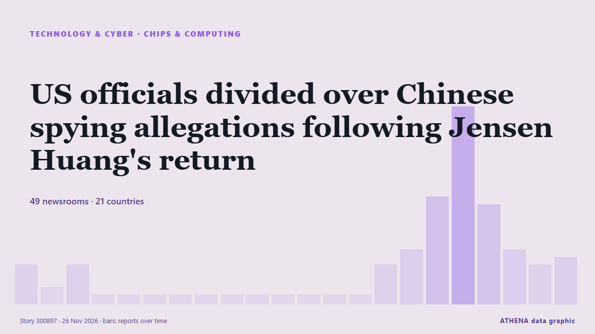

US officials divided over Chinese spying allegations following Jensen Huang's return

Days after President Donald Trump declared Nvidia CEO Jensen Huang was not a security threat to the United States, a central question remains unanswered: was the woman Huang was having an affair… από Business Recorder
Τι άλλαξε 9 νέες αναφορές από 9 μέσα τις τελευταίες 24 ώρες.
Δείτε τις πηγές ›Τεκμήριωση: Επαρκής
Αναφέρθηκε ανεξάρτητα από 49 μέσα σε 21 χώρες από τις 15 Νοε, πρώτο το to vima· η κάλυψη εξασθενεί. Το ATHENA εκτιμά τον κίνδυνο μέτριο (2.4/10), κυρίως λόγω της σοβαρότητάς του και της εμβέλειάς του. Βεβαιότητα 86% (υψηλή): το επιβεβαιώνουν 49 ανεξάρτητα μέσα, μέση αξιοπιστία 73%. Μέσα ανά χώρα: Ηνωμένες Πολιτείες (14), Ταϊβάν (5), Σιγκαπούρη (3). Κάλυψη: 15 Νοε έως 26 Νοε, 261 ώρες.
Τι άλλαξε: 9 νέες αναφορές από 9 μέσα στο 24ωρο έως 26 Νοε.
Πρώτη διατύπωση: How Jensen Huang Built the Backdoor Route That Keeps Beijing in the AI Race
ΑυτοματοποιημένοΕπιλέχθηκε, ομαδοποιήθηκε και βαθμολογήθηκε με τη δημοσιευμένη μέθοδο της ATHENA από 27 ανεξάρτητα μέσα. Ο τίτλος είναι του μέσου· οι προτάσεις της ATHENA ακολουθούν σταθερά πρότυπα - δεν τις γράφει παραγωγική ΤΝ. Πώς λειτουργεί →
Πώς να διαβάσετε αυτή τη σελίδα
- Τι διαβάζετε
- 49 μέσα σε 21 χώρες ανέφεραν αυτό το γεγονός. Οι αναφορές παρακάτω εμφανίζονται με τη σειρά που δημοσιεύτηκαν· κάθε τίτλος ανοίγει το αρχικό άρθρο. Το ATHENA δεν γράφει δικά του ρεπορτάζ.
- Η εκτίμησή μας
- Για την καταγραφή — Οι αναφορές περιγράφουν ένα ολοκληρωμένο, εσωτερικό, εμπορικό ή προσωπικό ζήτημα. Το καταγράφουμε ώστε να βλέπετε ποιος το ανέφερε και πότε. Δεν παρακολουθούμε εδώ κίνδυνο ευρύτερης σύγκρουσης.
- Πόσα στοιχεία υπάρχουν
- Επαρκής Αρκετά ανεξάρτητα μέσα συμφωνούν, αλλά η εικόνα μπορεί ακόμη να αλλάξει.
Αφού αφαιρεθούν οι επαναλήψεις, τα άσχετα και τα παλιά στοιχεία, υπολογίζονται 19 από τις 40 αναφορές που παρατίθενται· το 72% των τίτλων αντιστοιχεί στο γεγονός.
Περίπου το 32% των τίτλων είναι ανάλυση ή άποψη και όχι απλό ρεπορτάζ.
- Τι δεν σημαίνει
- Το ATHENA μετρά πώς καλύπτεται ένα γεγονός, όχι αν είναι αληθές. Δεν είναι πρόβλεψη, κρίση για το ποιος έχει δίκιο ή συμβουλή.
- Τι θα την άλλαζε
- Αναφορές από άλλα ανεξάρτητα μέσα που δείχνουν διαφορετική εξέλιξη, ή σαφής επιβεβαίωση ή διάψευση από επίσημη πηγή.
Εκτίμηση R2 · ανανεώνεται με κάθε ενημέρωση της σελίδας. Το ATHENA δεν έχει δημοσιεύσει ακόμη ιστορικό επιδόσεων για αυτές τις εκτιμήσεις· όταν το κάνει, θα συνδέεται εδώ.
Με μια ματιά
Επιλέγεται, βαθμολογείται και γράφεται από τη δημοσιευμένη μεθοδολογία του ATHENA. Κανένας συντάκτης δεν παρεμβαίνει σε μεμονωμένα γεγονότα. Πώς παράγεται ›
| 15 Nov 07:08 UTC | 4 |
|---|---|
| 15 Nov 19:08 UTC | 1 |
| 16 Nov 07:08 UTC | 4 |
| 16 Nov 19:08 UTC | 0 |
| 17 Nov 07:08 UTC | 0 |
| 17 Nov 19:08 UTC | 0 |
| 18 Nov 07:08 UTC | 0 |
| 18 Nov 19:08 UTC | 0 |
| 19 Nov 07:08 UTC | 0 |
| 19 Nov 19:08 UTC | 0 |
| 20 Nov 07:08 UTC | 0 |
| 20 Nov 19:08 UTC | 0 |
| 21 Nov 07:08 UTC | 0 |
| 21 Nov 19:08 UTC | 0 |
| 22 Nov 07:08 UTC | 4 |
| 22 Nov 19:08 UTC | 6 |
| 23 Nov 07:08 UTC | 13 |
| 23 Nov 19:08 UTC | 25 |
| 24 Nov 07:08 UTC | 12 |
| 24 Nov 19:08 UTC | 6 |
| 25 Nov 07:08 UTC | 4 |
| 25 Nov 19:08 UTC | 5 |
| 24 Nov 02:47 UTC | 2.2 |
|---|---|
| 24 Nov 03:03 UTC | 2.8 |
| 24 Nov 03:47 UTC | 3.4 |
| 26 Nov 04:48 UTC | 2.4 |
Γιατί αυτοί οι αριθμοί
Σημασία
Πόσο πολύ και πόσο εμφανώς αναφέρεται η είδηση.
Κίνδυνος
Τι περιγράφουν οι αναφορές, βαθμολογημένο για πιθανή ζημιά. Δεν είναι πρόβλεψη.
Βεβαιότητα
Πόσο καλά την στηρίζουν οι ανεξάρτητες πηγές.
Η κάλυψη — ποιος το ανέφερε και πότε
ο τίτλος όπως δημοσιεύτηκε · ανοίγει το πρωτότυπο- to vima · ΕλλάδαHow Jensen Huang Built the Backdoor Route That Keeps Beijing in the AI Race
- Indian Express · ΙνδίαChina This Week | Spotlight on Chinese spying in Jensen Huang saga, and a Xi-Trump-Putin meeting
- The Business Times · ΣιγκαπούρηSuspected Chinese spy Alice Huang left Megaspeed in August 2025, firm says
- Le Monde (English) · ΓαλλίαIn Taiwan, Jensen Huang's escapades draw more attention than China's large-scale naval maneuvers
- DigiTimes Asia · ΤαϊβάνTaiwan warns chip workers of detention risk in China, citing 470 cases
- To Vima (English) · ΕλλάδαBehind the Nvidia Affair Sits a Vast Chinese Spying Machine
- investingLive (ForexLive) · INTTrump says he wouldn’t mind seeing Huang reinstated as Nvidia CEO
- The Loadstar · Ηνωμένο ΒασίλειοCNBC: Nvidia fallout: Commerce targets ‘loophole for China’s data center use’
- APA (English) · ΑζερμπαϊτζάνTrump: I may discuss Nvidia and Iranian oil with Xi Jinping
- The Business Times · ΣιγκαπούρηNvidia’s slump, Anthropic’s listing turn spotlight on Big AI’s need for new governance frameworks
- Fast Company · Ηνωμένες ΠολιτείεςHistory shows why corporate boards should act fast on misbehaving CEOs
- Fortune · Ηνωμένες ΠολιτείεςNvidia’s next CEO must lead a supervised international business—amid the ‘complete reorganization of the AI equilibrium,’ investor says
- Tom's Hardware · Ηνωμένες ΠολιτείεςTSMC reportedly pauses shipments to Chinese designers after U.S. export rules flag decade-old 16nm and 14nm nodes
- Council on Foreign Relations · Ηνωμένες ΠολιτείεςJensen Huang Is Back. Here’s What That Means for Markets and the AI Race.
- DigiTimes Asia · ΤαϊβάνUS chip restrictions offer Taiwan IC designers a market-share opening, but will it last?
- DigiTimes Asia · ΤαϊβάνWeekly news roundup: TSMC to comply with new US rules; Musk approaches Korean firms for equipment
- DigiTimes Asia · ΤαϊβάνChina's memory buildout could boost Korean suppliers as local rivals gain ground
- DigiTimes Asia · ΤαϊβάνChina's neoclouds see confidence shaken as financing dries up
- Free Malaysia Today · ΜαλαισίαSiemens CEO warns Chinese competition could hurt US AI firms
- CBC News (alternative feed) · ΚαναδάςWho's spying on whom and why?
- TASS (English) · ΡωσίαMeetings between leaders of Russia, China this year bring relations to new level
- TASS (English) · ΡωσίαMoscow, Beijing to share experience in public finance, taxation — Chinese minister
- TASS (English) · ΡωσίαRussia’s financial policy plays decisive role in stability of economy — Chinese minister
- KQED News (San Francisco) · Ηνωμένες ΠολιτείεςNvidia’s Board of Directors Brings Jensen Huang Back as CEO
- APA (English) · ΑζερμπαϊτζάνTrump tells CNBC ‘I made the deal’ to reinstate Nvidia’s Jensen Huang
- Variety · Ηνωμένες ΠολιτείεςTrump Posts Bizarre AI Meme of Jensen Huang, Holding Up a Bra and Riffing Off 2024 Assassination Attempt on President, After Nvidia Board Reinstates CEO
- Fast Company · Ηνωμένες ΠολιτείεςThe free market isn’t so free. Just look at Jensen Huang
- NDTV World · ΙνδίαFrom 'Spy Affair' To 'Nothing Wrong' In 11 Days: What Brought Jensen Huang Back As Nvidia Boss
- Wired · Ηνωμένες ΠολιτείεςJensen Huang Is Back, and So Is Nvidia’s Stock
- Fast Company · Ηνωμένες Πολιτείες‘Sex sells, fellas’: President Trump defends Jensen Huang, says he pushed for him to be reinstated as Nvidia CEO
- Nile Post · ΟυγκάνταNvidia reinstates CEO Jensen Huang after affair with alleged spy as Trump says 'I made the deal'
- TheJournal.ie · ΙρλανδίαThe Jensen Huang dilemma: When does a CEO become too big to sack?
- France 24 English · ΓαλλίαNvidia reinstates Huang as CEO after Trump intervention
- Foreign Policy · Ηνωμένες ΠολιτείεςJensen Huang Is Back
- CNBC Economy · Ηνωμένες ΠολιτείεςPeterson: Here’s what Bessent’s about-face on Jensen Huang reveals about Trump and China
- Wired · Ηνωμένες ΠολιτείεςHow to Win Big Betting on Jensen Huang? Listen to Trump
- The Business Times · ΣιγκαπούρηUS stocks bounce back; Nvidia shares shoot up 31% as Jensen Huang returns as CEO
- Fast Company · Ηνωμένες ΠολιτείεςEverything that led to Jensen Huang being reinstated as Nvidia’s CEO
- The Verge · Ηνωμένες ΠολιτείεςWelcome to elite impunity, Jensen Huang
- Business Recorder · ΠακιστάνUS officials divided over Chinese spying allegations following Jensen Huang's return